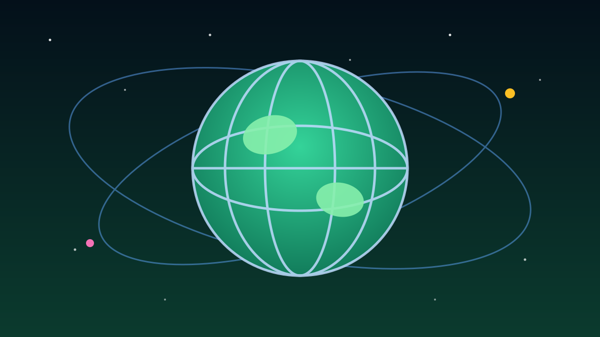

Hari Ini Sedunia Lagi Ngomongin Kesehatan Mental 🧠
📅 10 Oktober 2026⏱️ 1 menit baca
1 / 6

🌍 DUNIA
Hari Kesehatan Mental Sedunia 2026
Setiap 10 Oktober, dunia berhenti sejenak buat ngomongin satu hal yang sering disepelein: kesehatan mental. Kenapa ini penting buat lo? Geser →
2 / 6
📅
Diperingati Tiap 10 Oktober
Hari Kesehatan Mental Sedunia jatuh setiap tanggal 10 Oktober. Peringatan ini dipakai negara-negara di seluruh dunia buat ngingetin: kesehatan jiwa sama pentingnya dengan kesehatan fisik — dan stigma soal ini harus dikikis.
3 / 6
🎙️
Tema 2026: "Suara Lo Didenger"
Tahun ini WHO mengangkat tema "Pengalaman hidup yang didengar: suara nyata, perubahan nyata". Intinya: cerita dan pengalaman orang yang pernah bergumul dengan masalah mental perlu didengar — dan dipakai buat memperbaiki layanan kesehatan jiwa.
4 / 6
🏠
10 Oktober Juga Hari Tunawisma Sedunia
Di tanggal yang sama diperingati juga Hari Tunawisma Sedunia. Pengingat bahwa orang tanpa tempat tinggal termasuk yang paling rentan secara mental — dan butuh perhatian, bukan sekadar kasihan.
5 / 6
🇮🇩
Indonesia Ikut Gerak
Di Indonesia, peringatan ini dipakai buat mendorong akses layanan psikologis yang lebih merata — biar konseling nggak cuma jadi barang mewah buat yang mampu aja. Dinas-dinas kesehatan di berbagai kota menggelar skrining dan edukasi.
6 / 6
🤔
Efeknya ke lo apa?
Kuliah, kerja, doomscrolling — generasi kita akrab banget sama burnout yang dibungkus kalimat "aku baik-baik aja". Hari ini reminder: nggak apa-apa buat nggak selalu oke. Kalau lagi berat, cerita ke orang yang lo percaya atau cari layanan konseling. Minta bantuan itu bukan tanda lemah, itu tanda lo peduli sama diri sendiri.
👆 geser kartunya
Gimana menurut lo?
🤖 Artikel ini disusun dengan bantuan AI dari berbagai sumber publik dan telah disunting manusia.